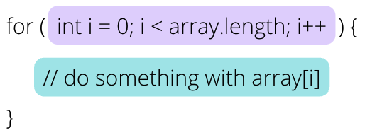

Array Patterns#
Note
Above, you’ll see there’s a video titled CSE 121: Array Patterns Video Walkthrough. The video and the reading both have the same information! You’re not required to go through both the video and the reading, as the video just walks through the reading to help contextualize it!
Caution
✋ Before you begin: This pre-class work will appear longer than others, because it’s really meant to be used as a reference! You’ve learned all you really need to about arrays by now, but now we want you to get some more practice with them. To that end, this pre-class work shows you some common patterns of ways to use arrays! No real new concepts or material, but lots of examples!
📖 Review: Array Traversals#
You’ll notice in the patterns and examples below, almost every single one uses some form of an array traversal! It’s been a little while, so let’s review a “typical” array traversal pattern:

Notice the bounds of the for loop. In this case, the loop variable i iterates through each valid index of array. It starts at 0 (the first valid index of array because arrays use 0-based indexing) and the loop test will fail when i is equal to the length of the array. This means that in the last iteration of the for loop, i is equal to array.length - 1 which is the last valid index of the array!
The body of the for loop indicates that we do something with array[i]. Since we’ve already established that i will take on the values of all valid indexes of array, doing something with array[i] in the body of the for loop means that we’ll do something with each element of the for loop!
🎒 Patterns#
🔢 Counting Elements that Meet a Condition#
Say we want to count the number of elements in an array that meet a specific condition. Well in order to do that, we’ll need to examine every element of the array – this is exactly what array traversals are built for! In this case, we’ll just need to have the loop body contain code that only increments our counter sometimes depending on whether the element in question meets the condition.
Example: evenLength
Say we want to write a method that counts the number of Strings in a String[] that have even length, and return that count! We’ve given you a start in the code below with the general pattern for an array traversal and a variable to hold the count – think about what the body of the for loop should look like!
public class EvenLength {
public static void main(String[] args) {
String[] arr1 = {"Lorelai", "Rory", "Luke", "Logan", "Emily", "Richard", "Dean", "Jess", "Sookie", "Lane"};
String[] arr2 = {"one", "two", "three", "six", "seven", "eight", "ten"};
String[] arr3 = {"four", "five", "nine"};
System.out.println("should be 6: " + evenLength(arr1));
System.out.println("should be 0: " + evenLength(arr2));
System.out.println("should be 3: " + evenLength(arr3));
}
public static int evenLength(String[] list) {
int countEven = 0;
for (int i = 0; i < list.length; i++) {
// do something with list[i]
if (/* fill me in! */) {
countEven++;
}
}
return countEven;
}
}
🤫 Take some time to attempt the problem above, and when you’re ready click “Expand” below to see one possible solution.
Expand
public static int evenLength(String[] list) {
int countEven = 0;
for (int i = 0; i < list.length; i++) {
if (list[i].length() % 2 == 0) {
countEven++;
}
}
return countEven;
}
🪄 Modifying Elements of an Array#
Another common pattern is passing over an array and applying some modification to each of its elements. Again, we’ll start with an array traversal to look at each individual element of the array, and in the body of the for loop we’ll need to apply whatever change is required!
Example: clamp
Let’s write a method that, given a minimum and maximum as parameters, goes through the array of integers that it is given and makes sure that every element is within the range [minimum, maximum]. If a given element is larger than maximum, it is replaced with maximum. If a given element is smaller than minimum, it is replaced with minimum. We’ve given you a start below, fill in the body of the for loop!
import java.util.*;
public class Clamp {
public static void main(String[] args) {
int[] arr1 = {4, 8, 15, 16, 23, 42};
int[] arr2 = {};
int[] arr3 = {5, 5, 5, 5, 5, 5};
int[] arr4 = {-100, 100, -50, 50, -25, 25, 0};
clamp(5, 15, arr1);
clamp(0, 10, arr2);
clamp(2, 4, arr3);
clamp(0, 0, arr4);
System.out.println("arr1 clamped to 5, 15: " + Arrays.toString(arr1));
System.out.println("arr2 clamped to 0, 10: " + Arrays.toString(arr2));
System.out.println("arr3 clamped to 2, 4: " + Arrays.toString(arr3));
System.out.println("arr4 clamped to 0, 0: " + Arrays.toString(arr4));
}
public static void clamp(int min, int max, int[] list) {
for (int i = 0; i < list.length; i++) {
// do something with list[i];
if (/* fill me in! */ > max) {
/* fill me in! */ = max;
} else if (/* fill me in! */ < min) {
/* fill me in! */ = min;
}
}
}
}
🤫 Take some time to attempt the problem above, and when you’re ready click “Expand” below to see one possible solution.
Expand
public static void clamp(int min, int max, int[] list) {
for (int i = 0; i < list.length; i++) {
if (list[i] > max) {
list[i] = max;
} else if (list[i] < min) {
list[i] = min;
}
}
}
Note
flipSigns from the previous pre-class work is another example of a problem that modifies the elements of an array! Notice that in clamp, we also don’t need to return the array in order for main to see the changes made because arrays use reference semantics! Feel free to refer back to the previous pre-class work to remind yourself how reference semantics work and understand why we don’t need to utilize a return in this case!
🔎 Searching for an Element#
Because arrays can hold many different values as its elements, sometimes we want to search through an array in order to find a particular value. In this case, we might not need to look at every single value of the array (once we find the element we’re looking for, we don’t need to keep on searching the array) but we will need to look at elements in a structured way, one at a time. A slight variation of our array traversal problem is just what we need here!
Tip
The “typical” array traversal that we’ve talked about traverses the array from index 0 to the very last index of the array. When using this pattern for searching for an element, we refer to this as sequential search, or linear search. Remember, there are other ways to traverse an array and consequently other ways to search for elements! We’ll get into this more later on!
Example: indexOfIgnoreCase
Suppose we want to write a method that accepts a String phrase and a String[] list that searches through list to find an element that is equal to phrase (ignoring case) and returns the index of the element, and returns -1 if no such element is found. If more than one element is equal (ignoring case) to the phrase, then it returns the smaller index. Again, we’ve given you a start – finish writing the method below!
public class IndexOfIgnoreCase {
public static void main(String[] args) {
String[] arr1 = {"Lorelai", "Rory", "Luke", "Logan", "Emily", "Richard", "Dean", "Jess", "Sookie", "Lane"};
String[] arr2 = {"one", "two", "three", "six", "seven", "eight", "ten"};
String[] arr3 = {"four", "five", "nine"};
int idx1 = indexOfIgnoreCase("lorelai", arr1);
System.out.println("Should be 0: " + idx1);
int idx2 = indexOfIgnoreCase("", arr1);
System.out.println("Should be -1: " + idx2);
int idx3 = indexOfIgnoreCase("SIX", arr2);
System.out.println("Should be 3: " + idx3);
int idx4 = indexOfIgnoreCase("nInE", arr3);
System.out.println("Should be 2: " + idx4);
int idx5 = indexOfIgnoreCase("eighttttt", arr2);
System.out.println("Should be -1: " + idx5);
}
public static int indexOfIgnoreCase(String phrase, String[] list) {
for (int i = 0; i < list.length; i++) {
// do something with list[i]
// HINT: remember that Strings have an equalsIgnoreCase method!
if (/* fill me in! */) {
return ??;
}
}
return ??
}
}
🤫 Take some time to attempt the problem above, and when you’re ready click “Expand” below to see one possible solution.
Expand
public static int indexOfIgnoreCase(String phrase, String[] list) {
for (int i = 0; i < list.length; i++) {
if (list[i].equalsIgnoreCase(phrase)) {
return i;
}
}
return -1;
}
↔️ Shifting Elements#
Another set of array problems involve shifting elements around in an array. This may involve shifting elements from left or right, or some other reordering. When moving values within an array, we have to be mindful of losing data. If we take the value at index i and move it to index i+1, then we’ll lose the value that was previously at i+1 unless we save it somehow! Sometimes using local variables strategically can help us ensure that we don’t lose any data, or even traversing the array backwards!
Example: rotateRight
Let’s write a method called rotateRight that takes a given double[] and rotates all of its elements to the right, meaning that the last element of the array is moved to the front, and all of the other elements are moved over by 1 slot to the right. For example, if an array were initially {0.0, 0.1, 0.2, 0.3, 0.4}, after passing it to rotateRight it would be {0.4, 0.0, 0.1, 0.2, 0.3}. We’ve given you a partial implementation, fill in the last few bits to complete the method!
While there are multiple approaches you could use to write a solution for this problem, we have chosen to use a for loop that traverses the array backwards (starting at the last index and moving towards index 0) and makes use of a local variable in order to solve the problem. Below you can find a description of the algorithm that we ask you to help implement in the code box just underneath!
Save the element in the last index into a local variable named
lastElement- Because we’ll be copying values over to the right, starting with the last index, we don’t want to lose any data when we store a new value into its place in the array! By saving a copy of the last element in a separate local variable, we are now free to replace it with a new value without losing any data! We’ve written this line of code for you!Write a
forloop that traverses the array backwards - This will allow us to shift values over to the right without needing to worry about losing data. We’ve already written thisforloop header for you!Take each element and copy it over to the index directly to its right - With the way the loop is written, each time we replace an element, its data has already been copied over or saved in some way. We’ve written this line for you!
Copy the saved element that was previously the last element in the area into the first index - The last step we need to do is place the element that we saved at the very beginning of the algorithm into the first index of the array. Your job is to write this line in the code box below!
You can see a visual representation of these steps by clicking “Expand” below (note that the slides below are purely a visual representation of the steps described above).
import java.util.*;
public class rotateRight {
public static void main(String[] args) {
double[] arr1 = {9.6, -88, 4.815, 0.009, 7.0184, 42.9};
double[] arr2 = {};
double[] arr3 = {5.5, 5.5, 5.5, 5.5, 5.5, 5.5};
double[] arr4 = {-100.7, 100.7, -98.6, 98.61, 81549.5, 8.64, 0.25};
rotateRight(arr1);
rotateRight(arr2);
rotateRight(arr3);
rotateRight(arr4);
System.out.println("after rotateRight(arr1): " + Arrays.toString(arr1));
System.out.println("after rotateRight(arr2): " + Arrays.toString(arr2));
System.out.println("after rotateRight(arr3): " + Arrays.toString(arr3));
System.out.println("after rotateRight(arr4): " + Arrays.toString(arr4));
}
public static void rotateRight(double[] list) {
// We claim that this problem is actually simpler to solve by traversing
// the array BACKWARDS (starting with index length - 1, then length - 2,
// and so on).
double lastElement = list[list.length - 1];
// i starts at the last index (list.length - 1), decrements by 1 each
// iteration, and goes until i > 0 fails (so i is never 0 in this for loop!)
for (int i = list.length - 1; i > 0; i--) {
// takes each element (starting at the second to last element of the array)
// and shifts it over one index.
list[i] = list[i - 1];
}
// at this point, we've *shifted* all of the elements over to make room
// for the last element to be placed at the front of the array (index 0).
// Do that here!
}
}
🤫 Take some time to attempt the problem above, and when you’re ready click “Expand” below to see one possible solution.
Expand
public static void rotateRight(double[] list) {
double lastElement = list[list.length - 1];
for (int i = list.length - 1; i > 0; i--) {
list[i] = list[i - 1];
}
list[0] = lastElement;
}
❓Take a moment to think: Why is the for loop test i > 0 instead of i >= 0? What would happen if we changed the for loop so that the loop body executed when i is 0?
👓 Looking at Multiple Elements in an Array#
Up until this point, we’ve mostly been looking at one element of an array at a time. In the rotateRight example just above, we were looking at two indexes at a time (taking an element from one index and copying it to another) but we were still only really looking at one element at a time. But there are some array problems where you want to look at two elements at a time!
Example: isPalindrome
Let’s write a method that accepts an int[] that returns true if that array is a palindrome (where its sequence of elements is the same read forwards or backwards like {3, 1, 3} or {0, 1, 9, 1, 0}) and false if it is not a palindrome. Here, we’ll need to look at two elements at a time to compare them! We’ve given you a start below. All that’s left to fill in is what to return on lines 14 and 17 (HINT: one line should return true; and the other line should return false;).
Below you can find a description of the algorithm that we ask you to help implement in the code box just underneath!
Write a
forloop that runs roughly half as many times as the array’s length - You can think of this as iterating once for each pair of elements in the array, because we really need to check pairs of elements to compare them to each other. We’ve written this loop header for you!Compare the elements at index
iand indexlist.length - 1 - ifor equality - These two indices represent pairs of elements that need to be equal in order for the array to be considered a palindrome. Notice that, asiincreases,list-length - 1 - idecreases, so as theforloop iterates we examine pairs of elements closer and closer to the middle of the array. We have written this test for you!Depending on whether the compared elements are equal or not, return some value - You should write this line in the code box below!
After all of the elements have been examined, return some value - You should write this line in the code box below!
Note
Considering the example array of {0, 1, 9, 1, 0}, i would take on the values 0 and 1 (because when i reaches 2, it will fail the for loop test i < list.length / 2). So in the first iteration of the loop, i is 0 and we compare the element at index 0 against the element at index 0. In the next iteration, i is 1 and we compare the element at index 1 against the element at index 3.
We don’t look at index 2, but it turns out it doesn’t matter! Because there is only one value left and it is exactly in the middle of the array, we’d just be comparing it to itself so whatever value it holds doesn’t affect whether the entire array is a palindrome or not!
You can see a visual representation of these steps by clicking “Expand” below (note that the slides below are purely a visual representation of the steps described above).
public class IsPalindrome {
public static void main(String[] args) {
int[] arr1 = {4, 8, 15, 16, 23, 42};
int[] arr2 = {};
int[] arr3 = {5, 5, 5, 5, 5, 5};
int[] arr4 = {-100, 100, -50, 50, -25, 25, 0};
int[] arr5 = {3, 1, 3};
int[] arr6 = {0, 1, 9, 1, 0};
int[] arr7 = {5};
System.out.println("Should be false: " + isPalindrome(arr1));
System.out.println("Should be true: " + isPalindrome(arr2));
System.out.println("Should be true: " + isPalindrome(arr3));
System.out.println("Should be false: " + isPalindrome(arr4));
System.out.println("Should be true: " + isPalindrome(arr5));
System.out.println("Should be true: " + isPalindrome(arr6));
System.out.println("Should be true: " + isPalindrome(arr7));
}
public static boolean isPalindrome(int[] list) {
for (int i = 0; i < list.length / 2; i++) {
if (list[i] != list[list.length - 1 - i]) {
return ??;
}
}
return ??;
}
}
🤫 Take some time to attempt the problem above, and when you’re ready click “Expand” below to see a few possible solutions.
Expand
public static boolean isPalindrome(int[] list) {
for (int i = 0; i < list.length / 2; i++) {
if (list[i] != list[list.length - 1 - i]) {
return false;
}
}
return true;
}
public static boolean isPalindrome(String[] list) {
int leftIndex = 0;
int rightIndex = list.length - 1;
while (leftIndex < rightIndex) {
String leftElement = list[leftIndex];
String rightElement = list[rightIndex];
if (!leftElement.equals(rightElement)) {
return false;
}
leftIndex++;
rightIndex--;
}
return true;
}
🧮 Array of Counters or “Tallying”#
So far we’ve been given arrays to work with, and done some calculation or task using them. However in this pattern, we won’t be given an array to work with – we’ll have to create it ourselves! Since arrays sort of act like a bunch of variables glued together, we can also use them as a bunch of counters glued together.
Example: numCount
Let’s write a method called numCount that takes an input Scanner as a parameter and reads single-digit numbers from it (0-9), and returns an array with the count of 0’s at index 0, the count of 1’s at index 1, etc. For example, a Scanner that contains the data 8 3 0 1 2 2 0 7 2 would return the array {2, 1, 3, 1, 0, 0, 0, 1, 1, 0} because there are two 0’s, one 1, three 2’s, one 3, one 7, one 8, and none of any other single-digit number. You can assume that the input will only contain single-digit integers.
We’ve given you a partial implementation below, leaving a few lines for you to fill in! Notice that we are taking advantage of the fact that int[] array elements are default initialized to 0 when you first create the array (since we want our counters to start at 0).
Below you can find a description of the algorithm that we ask you to help implement in the code box just underneath!
Create an array of
ints to store the counters named counts - You should write this line in the code box below! Think about the size of the array you need to create.Use a while loop to continue reading
ints in from theScanneruntil there are noints left - This is a standard token-based processing loop that we have written for you!Read in the next token as an
intand store it in a local variablenum- We’ve written this for you!Use
numto increment the appropriate index in the array of counters (counts) - You should write this line in the code box below! There are some hints to help you with this in comments.
Return the array of counters - We’ve written this for you!
You can see a visual representation of these steps by clicking “Expand” below (note that the slides below are purely a visual representation of the steps described above).
Expand
Note that the arrow pointing at the bordered box on the right (representing the Scanner’s input) points just to the left of the next token it will consume.
import java.util.*;
public class NumCount {
public static void main(String[] args) {
Scanner input1 = new Scanner("8 3 0 1 2 2 0 7 2");
Scanner input2 = new Scanner("1 2 3 4 5 \n 6 7 8 9 0 ");
Scanner input3 = new Scanner("");
Scanner input4 = new Scanner("5 5 5 5 5 5 5 7 0");
System.out.println("counts from input1: " + Arrays.toString(numCount(input1)));
System.out.println("counts from input2: " + Arrays.toString(numCount(input2)));
System.out.println("counts from input3: " + Arrays.toString(numCount(input3)));
System.out.println("counts from input4: " + Arrays.toString(numCount(input4)));
}
public static int[] numCount(Scanner input) {
// create an array with one slot for each digit (0-9) that we are counting!
int[] counts = /* fill me in! */
while (input.hasNextInt()) {
int num = input.nextInt();
/*
if (num == 0) {
counts[0]++;
} else if (num == 1) {
counts[1]++;
} else if (num == 2) {
counts[2]++;
} ...
*/
// We could write a long conditional like the one above to increment
// the appropriate index when we see a given number, but do you see a way
// to shorten this into just one line?
// HINT: whatever num is, that's the index we want to increment!
}
return counts;
}
}
Notice that for numCount we do have to return an int[] reference! This is because we create the array inside of the method, so there is no way for main to see the array if we don’t return it!
🤫 Take some time to attempt the problem above, and when you’re ready click “Expand” below to see one possible solution.
Expand
public static int[] numCount(Scanner input) {
int[] counts = new int[10];
while (input.hasNextInt()) {
int num = input.nextInt();
counts[num]++;
}
return counts;
}
💭 Common Ideas in Array Patterns#
Now that you’ve made it through this long list of array patterns (🥳 way to go!!), let’s think about some of the common ideas that were used in each of them.
loop bounds - Our “typical” array traversal has the loop variable go from 0 to array.length - 1, which is all valid indices of array. However, we’ve also seen variations of this pattern where we exclude the first or last index, or where we only want the loop to run array.length / 2 times. The exact loop bounds you should use depends on the problem!
direction of traversal - Most of the traversals we have seen have moved “forward” across the array (from index 0 onward). However, we also saw an example where traversing the array “backwards” (from index array.length - 1 to 0) served our purposes better (it allowed us to “shift” values over without losing any data). You’ll probably most often use “forward” traversals when you encounter array problems, but some it’s worth considering whether a “backwards” traversal!
index into array - Most often, we use i (our loop variable) as the index for our array, but we sometimes used an expression involving i (such as i + 1 or array.length - 1 - i). Again, thinking about using array[i] may be a good place to start, but it’s not always the exact expression we need!